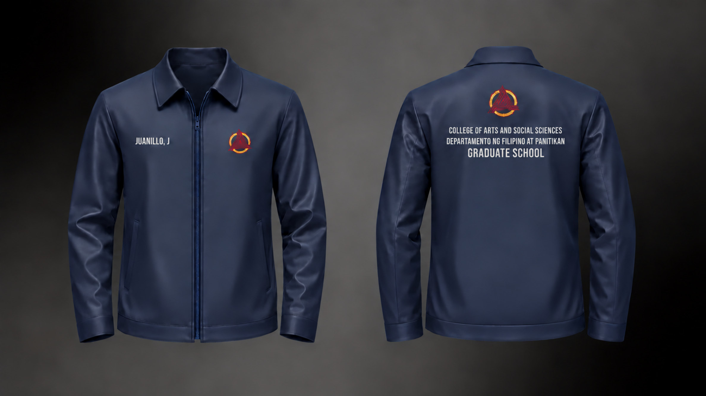

DiscoverUNDERSTAND
UNDERSTAND
THE IDEA.
Begin with the message, audience, and purpose. What should the design say? What feeling or identity should it express?
Every design starts somewhere. Here's how I like to move from a simple idea to a visual story.
I approach design with curiosity and intention. Whether I'm developing an editorial spread, exploring typography, or preparing an apparel mockup, I start by thinking about the story and identity behind the work.
My process is flexible rather than one-size-fits-all. Different projects call for different kinds of exploration, experimentation, and refinement.
Begin with the message, audience, and purpose. What should the design say? What feeling or identity should it express?
Experiment with layouts, typography, color palettes, and visual references. Give different directions room to develop.
Pay attention to spacing, hierarchy, alignment, and visual consistency. Small adjustments can make a message clearer.
Bring the final concept into focus through considered presentation, mockups, and supporting visuals that communicate the design.
These stages describe my general creative approach; the exact steps vary by project.
Take a closer look at the editorial and commissioned design work featured in my portfolio.
EXPLORE MY WORK
TAILORED IDENTITY / DIGITAL DESIGN MOCKUPEvery project begins with a conversation. I'd love to hear what you have in mind.
GET IN TOUCH